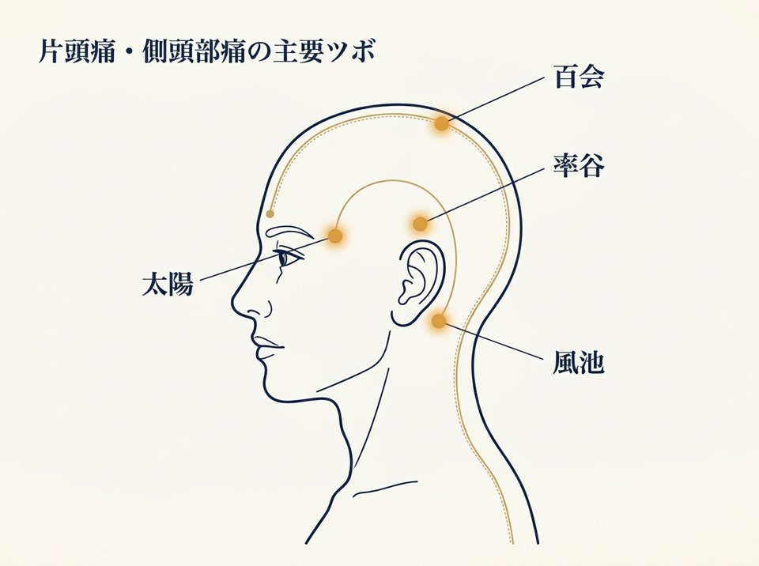

メニエール病の鍼灸
内リンパ水腫によるめまい発作や耳鳴り・耳閉感に対し、聴宮などのツボと首・顎の深層筋ケアで内耳循環を支援します。


院長YouTube解説・関連動画
メニエール症はめまいの発作を繰り返す
メニエール病は、普段、日常生活を送っている中で、激しい回転性のめまいや難聴、耳鳴り、耳が詰まる感じのある耳閉塞感を繰り返す疾患です。
耳の中にある内耳という部位には内耳を満たしている内リンパ液といわれる液があります。メニエール病はこのリンパ液が過剰にたまる「内耳リンパ水腫」が原因で起こると考えられています。
メニエール病によって起こるめまいの発作は数分で止まることも、数時間続くこともあります。発作が起きる間隔も週1回から年1回などで、症状の個人差が非常に大きくあることが特徴です。
一般的にメニエール病は30～50歳代に多く、高齢者には少ないと言われています。発症後1～2年程度で軽くなったり改善したりするすることが多いといわれています。
しかし、数年以上改善せず、何年にもわたって症状が続くケースも報告されています。
発作が繰り返し起こることによって耳鳴りが慢性化したり、難聴が進んだりするという報告もあります。メニエール病の改善には、主に薬による改善が一般的です。ただし、難治性の場合は外科的な改善方法を使って改善することもあります。
・回転性めまい（Vertigo）
突然の強い回転性めまいが発作的に発生し、数分から数時間続くことがあります。発作中は、動くことが難しくなり、バランスを取るのが困難になります。めまいに伴い、吐き気や嘔吐が生じることもあります。
・難聴（Hearing Loss）
主に片耳に影響を及ぼし、進行性の感音難聴が特徴です。発作の初期段階では一時的な難聴が見られることが多いですが、時間とともに持続的な難聴に進行することがあります。低音域の難聴が初期症状として現れることが多いです。
・耳鳴り（Tinnitus）
耳の中で音が鳴る感覚が発作の前や発作中に発生します。耳鳴りは一定の音量で続く場合もあれば、変動することもあります。
・耳閉感（Aural Fullness）
耳が詰まった感じや圧迫感があり、しばしば発作の前兆として現れます。耳閉感は発作が終わると緩和されることがありますが、持続する場合もあります。
メニエール病の主な原因は疲れ
メニエール病の主な原因は疲れです。疲れを引き起こす原因はストレス、睡眠不足など日常生活にあることが多いといわれています。難聴や耳鳴りが増え、回転性めまい発作が起こったり無くなったりすることを繰り返します。
メニエール病の難聴は低音障害型難聴から始まります。初期症状は、低い音が聴き取りにくいことです。
めまいの発作は、１０分以上続き、目が回ったときのような回転性であるといわれています。めまいは回転性の場合だけでなく、浮動性の場合もあります。
この初期症状が進行した後に、中高音域にも感音難聴を感じ始めます。この難聴が全周波数に広がっていきます。
症状の推移には、発作期と間歇期があります。発作期には、強いめまいや難聴が主に症状として起こります。耳鳴りや耳閉感、聴覚過敏などの症状も現れると言われています。
間歇期には、強いめまい症状よりも、症例によっては不定の浮動感などを主に感じることが多いといわれています。 つまり、聴覚症状は軽くなりますが、軽度だとしても何かの症状が残ってしまうことが多いのがメニエール病なのです。
難聴は罹ってしまっている期間が長期になり、発作を繰り返すにつれて段々と高度になっていくと言われています。
難聴になっている期間が経過している間に片側だけでなく、反対側の聴力の変動も起こり、両側とも難聴になる場合があります。このような症状が見られたら専門医に相談する事が大切です。
・内リンパ管の機能不全
エンドリンパ液の生成と吸収のバランスが崩れることにより、液体が過剰に蓄積します。内リンパ管が正常に機能しないことがエンドリンパ水腫の原因と考えられています。
・ウイルス感染
一部の研究では、ウイルス感染が内耳の炎症を引き起こし、エンドリンパ水腫を誘発する可能性が示唆されています。特に、ヘルペスウイルスの感染が関連しているとの説があります。
・遺伝的要因
家族歴がある場合、メニエール病のリスクが高まることが知られています。遺伝的要因が関与している可能性があります。
・免疫異常
免疫系の異常が内耳の炎症を引き起こし、エンドリンパ水腫を誘発することがあります。自己免疫疾患との関連も研究されています。
・アレルギー
一部では、アレルギーがメニエール病の発症に関与している可能性があります。アレルギー反応が内耳に炎症を引き起こすことがあります。
・血管異常
内耳への血流が不十分である場合、エンドリンパ水腫を引き起こすことがあります。血管障害や血行不良が原因と考えられています。
・ストレス
ストレスがメニエール病の症状を悪化させることが報告されています。ストレス管理が症状のコントロールに重要です。
塩分の多い食事がエンドリンパ水腫を悪化させることがあるため、塩分制限が推奨されます。
・アルコールとカフェイン
アルコールやカフェインの過剰摂取は内耳の液体バランスに影響を与える可能性があるため、これらの摂取を控えることが勧められます。
さまざまなめまいの特徴と原因
めまいが起こると、病院に行きいろいろ調べ、眼振しているか耳の状態はどうかなどを見てもらい、イソバイドやステロイドをもらって様子を見ることが多いです。重症な場合は前庭リハビリテーションを行いそれでも改善せず、鍼灸院に来る人が多いです。
めまいは簡単な改善方法では改善しません。何からきているのか、どういうふうに対応したら良いのか、どのような特徴があるかを知る必要があります。
1.回転性めまい
特徴・・・周りが回転しているように感じるめまい
原因・・・内耳、脳幹の異常
当院ではメニエール病、前庭神経炎の２種類のケースがあります。
メニエール病は鍼灸で改善しやすい病気です。聴宮というツボに鍼をするとすぐに改善します。メニエール病で内耳のむくみをとるための薬としてイソバイドを飲んでいる人が多いが鍼では簡単に改善します。
2.浮動性めまい
特徴・・・体がふわふわ浮いているように感じる
原因・・・低血圧、貧血、心疾患、不安障害
浮動性めまいも非常に多く、大体のパターンは細身の女性でうつ病の人が多いです。
3.良性発作性頭位めまい症
特徴・・・特定の位置で発生する短時間の回転性めまい
原因・・・内耳の耳石が三半規管内に入ることで起こる
半規管結石型とクプラ結石型の２種類あります。
半規管結石型は頭の向きを変えることで剥がれた耳石が三半規管内を移動してしまうことによって異常なリンパ液の流れを生み出すことで眩暈が起こります。
クプラ結石型は耳の中のリンパの流れを感知する神経に耳石が付着する現象です。重力でクプラという神経が刺激されて眩暈が発生します。
耳石の位置が元に戻れば改善するため、頭を振っているうちに改善することがあります。自分の力で戻らなくなると慢性化してしまいます。病院で内耳にエコーを当てながら場所を確認して下の位置に戻す方法があります。鍼灸では正常なリンパ還流に戻ることで落ち着きやすい症状です。
4.前庭神経炎
特徴・・・急な回転性のめまい、吐き気、嘔吐
原因・・・前庭神経の炎症
ステロイドを処方されてすぐ改善することが多いです。
5.メニエール病
特徴・・・反復する回転性のめまい耳鳴り、難聴
原因・・・内耳のうちリンパ水腫
耳の穴の外耳、中耳、内耳のインパ管が腫れてしまうことで起きます。
6.内耳炎
特徴・・・回転性のめまい聴力低下
原因・・・内耳の炎症
突発性難聴がひどい人などは内耳炎になって眩暈がする人が多いです。
7.起立性低血圧
特徴・・・立ち上がった時に感じるめまい
原因・・・血圧の急激な低下
8.自律神経失調症
特徴・・・立ちくらみ、ふらつき
原因・・・ストレス、過労
9.薬剤性めまい
特徴・・・薬の副作用によるめまい
原因・・・抗うつ薬降圧薬抗ヒスタミン剤
薬剤性のめまいが疑われる人は当院ではあまりいません。
10.心因性めまい
特徴・・・不安パニックに関連しためまい
原因・・・心理的なストレス、不安
11.血圧異常
特徴・・・高血圧、低血圧に関連するめまい
原因・・・血圧の異常な変動
12.頸性めまい
特徴・・・首のうごき姿勢に関連するめまい
原因・・・頸椎の異常、緊張
頸性神経筋症候群といい、首が固まることによって起こるめまいです。椎骨動脈圧迫症状、バレリュー症状でも多いケースです。鍼灸で良くなります。首の硬さが取れない限りめまいが落ち着かないという特徴があるため、理解してもらって改善に取り組むことが大事です。
13.動揺病
特徴・・・乗り物酔いによるめまい
原因・・・視覚、内耳の不一致
14.感染症
特徴・・・内耳や脳幹に感染した場合に起こるめまい
原因・・・ウイルス、最近による感染
風邪をひいた後からめまいが改善しない場合やコロナ後遺症でめまいが止まらない場合などこのケースも多いです。特徴は鍼灸でも一切症状が変わらないことです。脳がおかしくなっているケースが多いため、抗てんかん薬を処方されておちついていく人を見たことがあります。当院では、ウイルス性脳炎から来るめまいであると考えています。
15.循環器系の問題
特徴・・・心臓の血流が不自由な場合に起こる
原因・・・心筋症 心臓発作、不整脈
16.低血糖
特徴・・・血糖値の急激な低下によるめまい
原因・・・糖尿病の改善中のインシュリンの過剰投与
当院では１例みたことがあります。めまいやふらつきが取れないという症状でしたが、インシュリンの入れすぎのため適正量に戻したら改善しました。１型糖尿病に多いです。
17.熱中症、脱水
特徴・・・体温の上昇、脱水
原因・・・熱い環境、水分不足
18.中毒
特徴・・・有毒物質の摂取
原因・・・一酸化炭素中毒
19.神経学的疾患
特徴・・・神経系の障害によるめまい
原因・・・パーキンソン、多発性硬化症
20.持続性知覚性姿勢誘発めまい
特徴・・・不安定感、浮動感によるめまい
原因・・・他のめまいと共存して発生
P P P Dは回転性のめまいが起こることやふわふわしためまいが起こること、２つのめまいが混合して起こることがあります。非常に難しい症状なのです。
21.ラムゼイハント症候群
特徴・・・顔面痛耳痛、顔面麻痺、聴覚喪失
原因・・・帯状疱疹ウイルスによる感染
自分の免疫細胞が落ちてくると神経に住み着いている帯状疱疹ウイルスが暴走して周辺に炎症を起こします。ラムゼイハント症候群は顔や耳で起こることが多く、現在１名通院している方がいらっしゃいます。
22.聴神経腫瘍
特徴・・・聴覚喪失、耳鳴り、平衡感覚の喪失
原因・・・内耳神経に発生する腫瘍
23.低ナトリウム血症
特徴・・・ナトリウム異常低下によるめまいと吐き気、頭痛
原因 水分の過剰摂取特定の薬剤
24.てんかん性めまい
特徴・・・てんかん発作によるめまい、空間認識に関与する脳のエリアの過剰興奮
原因・・・異常な電気放電による発作
25.顎性めまい
特徴・・・顎の筋肉が固まることによって首のリンパの流れが悪化し、耳の方でむくみを起こす
原因・・・顎の筋肉の硬さ
26.うつ病、不安障害
特徴・・・抑うつ状態、不安障害によるめまい
原因・・・精神的なストレス、心理的な問題
27.腫瘍
特徴・・・ホルモン分泌の異常によるめまい
原因・・・内分泌腫瘍
めまいの症状は、一過性のこともなかなか改善しないこともあります。
体が壊れて起こる場合もウイルス感染によって起こる場合ももあるため病院に行き薬を飲むことが良いです。鍼灸が力になれるめまいも多いため、メニエール病など鍼灸で改善するめまいの場合は鍼での改善もおすすめです。
メニエール病の改善方法は薬
めまいの発作が起きている間は、横になって安静を保つことが大切です。 めまいの発作が止まった時に専門医に相談してください。 改善方法としては主に薬を使う方法があります。
めまいや吐き気がひどいときは、応急処置として抗めまい薬の内耳循環改善薬、吐き気止めの制吐剤、炎症を抑えるためのステロイド薬、抗不安薬などが使われます。
比較的症状が軽い場合は、薬をのんで症状の改善を待ちます。症状が重い場合、注射や点滴によって改善を行うこともあります。
薬を服用して発作が止まった後は、メニエール病の原因である内リンパ水腫を軽減することが必要です。
内リンパ水腫を軽減させるためには、体の水分を排泄する利尿薬やビタミン薬、自律神経調整薬、抗不安薬、副腎皮質ホルモン薬などを使います。このような薬によってメニエール病は改善を行うのです。
メニエール病が改善しにくい場合、鼓膜を経由して内耳へ薬を注入する改善方法や内リンパ液を減らすための手術をする方法、前庭神経を切除する手術をする方法などの改善方法が考えられます。
・利尿薬
フロセミド（Lasix）やヒドロクロロチアジド（HCTZ）などが使用され、体内の余分な水分を排出し、内耳の圧力を下げるのに役立ちます。
・抗めまい薬
メクリジン（Antivert）やジメンヒドリナート（Dramamine）などが、めまいの症状を軽減します。
・抗不安薬
ジアゼパム（Valium）やロラゼパム（Ativan）などが、ストレスや不安を和らげるために使用されることがあります。
・ステロイド薬
耳の中にステロイドを注入することで、内耳の炎症を抑えることがあります。
・抗生物質注射
ゲンタマイシンを耳の中に注入することで、内耳の感覚細胞を部分的に破壊し、めまいを軽減する治療法もありますが、これは聴力のリスクも伴います。
塩分制限：一日あたり1500mg以下に制限することが推奨されます。塩分は内耳の液体バランスに影響を与えるため、制限が必要です。
カフェイン、アルコール、タバコの制限：これらの物質は内耳の血流や液体バランスに悪影響を与えるため、避けるべきです。
・水分補給
規則的な水分摂取を心がけることで、体内の液体バランスを保ちます。
・ストレス管理
ヨガ、瞑想、深呼吸などのリラクゼーション技術を取り入れてストレスを管理します。
・リハビリテーション
前庭リハビリテーション：バランスとめまいの管理を改善するための運動です。専門家の指導の下で行われます。
・カウンセリング
慢性的な症状や不安、抑うつを和らげるために、心理カウンセリングを受けることが推奨されます。
・内耳の手術
内リンパ嚢解放術：内耳の圧力を減少させるために、内リンパ嚢を解放する手術です。
内リンパ嚢シントリートメント：内リンパ嚢にシンを注入して内耳の圧力を減らす手術です。
・神経切断術
前庭神経を切断して、めまいの信号を脳に送らないようにする手術です。ただし、リスクが伴います。
・ラビリンス手術
内耳の機能を完全に除去する手術です。この手術は最終手段として使用され、通常は片耳の機能を失うことになります。
メニエール病は、日本全国で２万人ほどが発症している病気だといわれています。そして、メニエール病は一度慢性化した場合、完全に回復することは難しいと考えられています。
完全に回復することが難しい病気のために厚生労働省が定める難病に指定されています。しかし、特別な補助の対象にはなっていません。メニエール病にかかったとしても、国から補助金や費用の助成などが受給されることはないと考えてください。
耳鳴りとめまいの5つの前兆
耳鳴りやめまいには体からの警告サインが隠されていることがあります。このサインを見逃してしまうと慢性化してしまい、気がついた時には日常生活に支障をきたすことになります。
耳鳴りやめまいは多くの場合突然起こるように感じられますが、実際には発症前に前兆があります。
この前兆は大きく5つに分けられます。5つの前兆に適切な対処をすることで慢性化を防ぐことができます。
1.耳の圧迫感、つまり感
耳の詰まり感や圧迫感はあまり感じることがないかもしれませんが、耳鳴りめまいに関して非常に重要なサインです。この症状は耳鼻科に行っても原因がわかりません。これは、耳鼻科の先生は耳のプロであり、耳の中を調べても耳の問題が見られないためです。
耳のつまり感や圧迫感は耳周辺を担当する神経が興奮することで起こります。当然耳の中に虫が入ったり炎症が起きてしまったりすることでも起こる症状のため、耳鼻科には必ず行くことが大事です。しかし、耳自体に問題がない場合は脳からくるサインで、この症状があると脳から起こる耳鳴りを発症しやすいです。
常に圧迫感つまり感があるためだんだんめまいがしているような感覚が出て、クラクラしてしまいます。仕事ができるようなレベルであれば心配ありませんが、働けなくなる人も多いため、耳のつまり感や圧迫感を感じたら早く寝てゆっくり休みましょう。
2.顔のほてり頭のほてり
火照りは暖かいと感じたり汗をかいたりというようなものではなく、火照り感という意味合いに近いです。頭がモヤっとしている感覚で考えを巡らせることができなくなり、とにかくぼーっとします。
脳が興奮すると脳が血流、酸素、栄養を欲するようになります。すると、脳内の血圧が上昇し、顔周辺の細い血管が広がって顔が赤くなります。ひどい人は脈拍音まで聞こえてくる人もいます。火照り感やほてっている感覚が出てきたら必ず睡眠時間を長めに取りゆっくり休みましょう。
3.顔の症状
耳鳴りやめまいを発症する前に顔の症状がよく出ます。特に多いのが目のピクピクで、眼瞼キネシオロジー、眼瞼痙攣などと言われます。これが1番ポピュラーな症状です。目のピクピクが止まらない人は黄色信号です。
人によっては、頬や顎だけ痺れる、顎周りが硬く感じる、などの症状が現れます。顔周辺の感覚が強くなる、筋肉が痙攣する、という症状は脳が異常を知らせてくれています。
顔を担当している神経は脳神経といい脳から直接顔を担当しているため、脳の状態が露骨に顔の症状として現れるのです。目がピクピクする、顎周りが凝る、何か痺れるなどの感覚が出たらゆっくり休みましょう。
4.動悸
一見動悸は耳鳴りやめまいと関係ないと思われますが、動悸は非常に重要なサインです。心臓はきちんと一定のリズムで心臓を鼓動させていますが、過剰なストレスや体に無理がかかると一定のリズムが乱れたり過剰反応を起こします。これが動悸や不整脈です。
比較的若い人に動悸や胸が詰まる感覚が出る場合は、耳鳴りやめまいを併発している人が多いです。
またヒステリー球や梅核気という喉や胸部分に違和感や異物感を感じる症状も耳鳴りやめまいが慢性化する特徴的なサインになります。心臓周辺の症状が出た場合はゆっくり休みましょう。
5.感覚の過敏
人の声が大きく感じる、特定の音が不快に感じる、食べ物がしょっぱい、やけに光が眩しく感じる、というような人間の五感が鋭くなってきている人は耳鳴りめまいの前兆かもしれません。
この症状は疲れているだけと思いがちな症状ですが、人間は年齢を重ねていくと普通逆に感覚が鈍くなります。聞こえる音が高めになる、味が濃いめになる、などが人間の老化から考えると通常なのです。
めまいや耳鳴りが慢性化しやすい人は感覚が過敏になり、ちょっとした現象でも異常に不快に感じたり少し嫌なことがあると急にイライラしたりするなど過敏性が強くなり止められなくなります。不安やイライラがだんだん自分で制御できなくなるのです。
ある日耳鳴りやめまいが起きるとその辛さで精神的にも肉体的にもに参ってきてしまうというのが慢性化しやすい人のパターンです。少しでも過敏さが出てきたり過敏の感覚が続いていたりする人はゆっくり休みましょう。
調子が悪くなると病院に行き、異常がなければ漢方を飲んで様子を見ることになると思います。すると、生活習慣を変えずに漢方を飲んで良くなってきたと錯覚する人が多いです。
漢方はスパイスのようなもので飲むことで楽になったり落ち着いたりすると思いますが、それは意識で判断していることです。漢方を飲んだことで健康になったと錯覚してしまうのです。
5つの前兆は意識下で判断できないことです。脳の叫びであるため落ち着かせるためには寝るしかありません。この5つの前兆が起きた時点でだんだん寝れなくなります。そうすると自分でリカバリーすることが難しくなってしまいます。この前兆を感じたら早く対処することが必要です。
そのためには、運動をして深い睡眠を取らないといけません。健康な人はこの前兆に対する対処が異常に早く、調子が悪い人は体が壊れてから来院されます。壊れてからでは遅いため早い対処を心がけましょう。
▼ 詳しく知りたい項目だけタップして開けます（全項目の医学解説を収録）
01. 原因とメカニズム
なぜ症状が起きるのか・鍼灸の作用機序を読む
▼
01. 原因とメカニズム
なぜ症状が起きるのか・鍼灸の作用機序を読む
内耳を満たす内リンパ液が過剰に溜まる「内リンパ水腫」が主な病態です。平衡感覚を司る三半規管や聴覚を司る蝸牛が圧迫されることで、反復する回転性めまい発作、低音域から始まる感音難聴、耳鳴り、耳閉感が生じます。過労や睡眠不足、精神的ストレス、自律神経の乱れ、内耳の血流障害、塩分・カフェイン・アルコールの過剰摂取などが発作の引き金になりやすいとされます。
なぜ鍼灸で改善へ向かうのか？（作用機序の図解）
メニエール病に対する鍼灸は、脳循環・三叉神経血管系と神経可塑性の調整機序を通じて、お体本来の回復力を引き出します。
百会・風池・合谷などの経穴刺激が三叉神経や大後頭神経・体性感覚路へ穏やかに作用します。
脳幹の自律神経中枢やセロトニン・GABA系のバランスを整え、神経の過敏発火を鎮めます。
後頭下筋群や首深部のこわばりを解き、頭部・内耳・顔面周囲の血流環境をサポートします。
神経回路の再学習（可塑性）と睡眠の質を高め、専門医の治療やリハビリの土台を支えます。
02. よくあるお悩み
このような症状はありませんか？（4項目）
▼
02. よくあるお悩み
このような症状はありませんか？（4項目）
- ✓10分〜数時間続く強い回転性めまいと吐き気を繰り返す
- ✓低い音が聞こえにくい、耳が詰まった感じ（耳閉感）がある
- ✓キーン・ゴーといった耳鳴りが強弱を繰り返している
- ✓発作前に顔のほてりや顎の硬さ、動悸などの前兆を感じる
03. 当院の施術アプローチ
施術の進め方・改善のポイントを見る
▼
03. 当院の施術アプローチ
施術の進め方・改善のポイントを見る
04. ツボ詳細・セルフケア一覧
メニエール病・難治性めまい・耳鳴りのツボ図解（6穴）
▼
04. ツボ詳細・セルフケア一覧
メニエール病・難治性めまい・耳鳴りのツボ図解（6穴）
実際の施術ではお一人おひとりの体質・症状に合わせて選穴しますが、メニエール病・前庭性片頭痛・耳鳴り・難治性めまいの内耳循環ケアの臨床でよく用いられる代表的なツボの目安です。
| ツボ名 | 位置の目安 | 主な狙い | セルフケアの注意点 |
|---|---|---|---|
| 聴宮（ちょうきゅう） | 耳の穴の前、口を開けるとくぼむ場所 | 内耳周囲の微小循環改善・耳閉感や耳鳴りケア | 強く押さず口を少し開けて優しく触れます。 |
| 翳風（えいふう） | 耳たぶのすぐ後ろのくぼみ | 内耳・三叉神経・顔面周囲の血流とリンパ循環促進 | めまい発作直後は首を動かさず静かに温めます。 |
| 風池（ふうち） | 後頭部の生え際のくぼみ | 後頭下筋群の緊張緩和・椎骨動脈血流サポート | 親指で上向きに優しく支えるように押します。 |
| 完骨（かんこつ） | 耳の後ろの出っ張った骨の下後ろ | 平衡感覚の安定・睡眠の質改善 | 左右の張りを比べながら優しく緩めます。 |
| 内関（ないかん） | 手首の横ジワから指3本分肘寄りの中央 | めまいに伴う吐き気・自律神経発作の鎮静 | めまいが出そうなときのセルフ指圧にも有効です。 |
| 太衝（たいしょう） | 足の甲、親指と人差し指の骨の間 | ストレス性の内リンパ水腫悪化・イライラの緩和 | 深呼吸と合わせて3〜5秒ずつ押します。 |
05. 医学的根拠・国際査読論文（PubMed / Cochrane）
科学的エビデンス・出典リンク一覧（4件）
▼
05. 医学的根拠・国際査読論文（PubMed / Cochrane）
科学的エビデンス・出典リンク一覧（4件）
国際的な医学データベース（PubMed・Cochrane等）で報告されているメニエール病・前庭性片頭痛・耳鳴り・難治性めまいの内耳循環ケア領域の代表的な査読済み鍼灸研究をまとめています（標準治療との併用や研究上の限界を含めて正確に掲載）。
| 年・研究デザイン | 対象・規模 | 主な結果 | 限界・出典 |
|---|---|---|---|
| 2016年 Cochraneレビュー | 反復性片頭痛 22 RCTs（n=4,985） | 無治療比で頻度半減41% vs 17%（RR 2.40）、予防薬比3か月57% vs 46%（RR 1.24）かつ副作用脱落OR 0.27と優位。 | 1年以上の長期検証は不足。 Cochrane (PMID: 27351677) |
| 2016年 Cochraneレビュー | 脳卒中後リハ 31 RCTs（n=2,257） | 通常リハ併用でBarthel Index（MD 9.19）・Fugl-Meyer（MD 6.16）・嚥下・疼痛改善を示唆、重篤な有害事象なし。 | GRADE低〜非常に低。標準リハビリの補完として位置づけ。 Cochrane (PMID: 27562656) |
| 2024年 シャム対照RCT | パーキンソン病の睡眠障害 78名解析 | 抗PD薬併用下でPDSS睡眠尺度が4週時+19.75点・8週時+20.24点とシャム比有意改善（P<0.001）。 | 単施設・小規模・8週間追跡。標準薬併用が前提。 JAMA Netw Open (PMID: 38922617) |
| 2013年 多施設RCT | ベル麻痺（顔面神経麻痺）338名（ステロイド併用） | 6か月時の顔面神経機能回復は得気手技群が対照鍼群より優位（調整OR 4.16）、QOLも改善。 | 全例プレドニゾン併用。急性期の過剰顔面通電は回避配慮。 CMAJ (PMID: 23439629) |
参考文献・出典
- 2016年 Cochraneレビュー（反復性片頭痛 22 RCTs（n=4,985））— Cochrane (PMID: 27351677)
- 2016年 Cochraneレビュー（脳卒中後リハ 31 RCTs（n=2,257））— Cochrane (PMID: 27562656)
- 2024年 シャム対照RCT（パーキンソン病の睡眠障害 78名解析）— JAMA Netw Open (PMID: 38922617)
- 2013年 多施設RCT（ベル麻痺（顔面神経麻痺）338名（ステロイド併用））— CMAJ (PMID: 23439629)
06. よくある質問（FAQ）
よくあるご質問を見る（2件）
▼
06. よくある質問（FAQ）
よくあるご質問を見る（2件）
Q. めまい発作が起きている最中でも施術を受けられますか？
激しい発作時は安静と耳鼻咽喉科での対処が最優先です。発作が落ち着いた安定期に再発予防・耳症状のケアとしてご来院ください。
Q. 聴力が下がってきた場合も鍼灸だけで大丈夫ですか？
いいえ。感音難聴の進行を防ぐため耳鼻咽喉科での聴力検査と投薬治療を必ず継続し、鍼灸は循環・自律神経面の補完ケアとして併用してください。
あわせて読まれる関連疾患（脳神経のお悩み）
頭を動かした瞬間の回転性めまいに対し、首肩の緊張緩和と内耳循環・自律神経調整、寝返り運動で再発予防を支援します。
脈打つ強い痛みや光・音への過敏を伴う片頭痛に対し、首肩の深層筋と自律神経を整えて発作頻度と負担の軽減を目指します。
末梢性顔面神経麻痺に対し、早期の医療機関受診を最優先としたうえで、顔面の血流促進と後遺症予防を支援します。
突然の激しい回転性めまいが数日続く前庭神経の障害です。専門医の鑑別・急性期治療後、回復期のふらつきや自律神経を整えます。
主に前庭神経を包むシュワン細胞にできる良性腫瘍です。脳神経外科での評価を最優先に、経過観察期や術後の体調を支えます。
小脳の動脈閉塞で強いめまいやふらつきを起こす脳卒中。発症時は救急搬送を最優先に、回復期後遺症の補完ケアを支えます。
CLINICAL RECOVERY CASES
✨ 実際の臨床改善事例・回復経過を見る
銀座本院をはじめ各院での実際の改善事例を症状別に絞り込んでご確認いただけます。
おひとりで悩まず、まずはご相談ください
銀座本院・川口・大宮・横浜・博多・田無の各院でご予約を承っております。